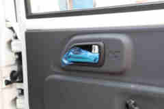
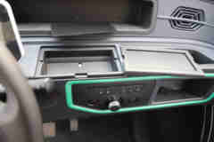
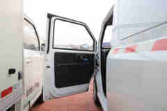

MBA 与评委机制
MBA 是 Metric Brand Auditor,中文可理解为“可量化品牌影响力审计器”。它先按 7 个维度做公开资料调研,再让行业评委 panel 独立打分,最后由 Lead 合成可复盘报告。
创始叙事、产品定位、渠道、社区/PR、视觉语言、竞品格局、真实信号。
Musk、雷军、李想、何小鹏、李斌独立评价,互不参考彼此答案。
Origin、Category、Leverage、Identity、Real-world signal。
汇总共识、分歧、关键缺口和 90 天品牌动作。
橙仕当前最重要的 6 个信号
评分雷达与总分对比
5 位评委一致认为:橙仕的场景切口真实,但服务数据、车型任务化表达和身份系统仍是短板。
Dissent Heatmap — 评委异议热力图
热力图用来回答:哪些地方评委高度一致,哪些地方最有分歧。橙仕最大分歧在 Real-world signal:应用信号变强,但 Musk 仍要求 fleet dashboard。
产品图片:先看到它是什么车
橙仕的品牌判断离不开产品形态:它不是审美型乘用车,而是末端配送工具车。下面图片来自卡车之家车型页,用于帮助理解车辆外观、驾驶室和货厢形态。
第一眼就是生产工具车,不是生活方式车。

品牌价值来自合法上路、灵活停靠和低成本配送。

体验重点不是豪华,而是低门槛、易维护、够用。

货厢能力决定每天多跑多少件,是生产力叙事核心。
图片来源:卡车之家 `橙仕 01 创富版 3.49米单排纯电动封闭货车20.72kWh` 车型页 / 实拍图库。原页面: product.360che.com/m556/139199_index.html。图片版权归原权利方所有,此处仅作报告说明引用。
影响力构造图
橙仕现在的品牌不是破圈传播,而是生产力链条。真正做功的不是“智能”大词,而是用户能否多赚钱、少停运、少扯皮。
快递末端、电三轮替代、商超补货、生鲜短驳、乡镇配送。
1.88 万 / 2.98 万 / 3.48-5.98 万价格带降低采购门槛。
170+ 场景、20 国、约 5000 台、30+ 应用场景。
服务半径、配件时效、保修判定、停运损失、残值不透明。
从低价小车变成末端配送经营者的运营保障系统。
5 位汽车评委独立判断
90 天品牌动作
发布“橙仕车主账本 100 例”
公开购车成本、日单量、能耗、维修、停运、回本周期和保修结果。
建立“任务-车型-收益”导购地图
把快递末端、商超补货、生鲜短驳、乡镇配送、农产品上行、移动售卖拆成可购买任务。
发布 3 城 fleet dashboard
公开车辆部署、日配送、uptime、维修时长、cost/km、电池健康。
发布可靠性白皮书
三电质保、故障率、维修件、满载续航、保修争议处理流程。
推出运营保障标准
服务半径、配件时效、保修判定、停运补偿、二手回收和车队 SLA。
最终判断
综合分: 31.0 / 50 = 6.2 / 10。 场景切口清晰、真实信号增强的早中期商用车品牌;服务数据和身份系统是主要短板。
商标、知识产权与免责声明
本报告为 MBA 品牌影响力研究与方法演示,所有事实判断均基于公开可访问资料,不使用企业内部文件、商业秘密或未授权数据库。
引用范围包括新闻报道、行业媒体文章、车型页面、公开投诉样本、MBA 方法说明和 GitHub 开源仓库信息。公开资料可能存在发布时间、媒体口径和样本偏差。
“橙仕汽车”“橙仕 01”“橙仕 X7”等品牌名、车型名、商标、标识及相关商业外观,均归其合法权利人所有;报告中的提及仅用于识别、评论、研究和说明。
产品图片来自卡车之家公开车型页 / 实拍图库,仅用于说明产品形态。图片版权及相关权利归原摄影者、发布平台或其他合法权利方所有。
本报告不表示 MBA、报告作者与橙仕汽车或相关权利主体存在赞助、授权、合作、背书或代理关系。
报告不构成投资建议、融资建议、采购建议、法律意见、审计意见或商业尽调结论。分数只反映 auto panel 在公开资料基础上的判断。
本轮未接入 Wuying 社交抓取、车主大样本访谈、售后工单、销量发票或车队运营后台。商业、投资、采购或法律决策前应自行核验一手资料并咨询专业顾问。